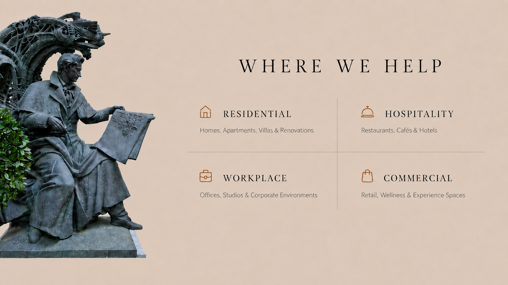

01 / THE ORIGIN
THE STORY BEHIND BAEROH
Rooted in Rajasthan. Designed for today.
“We design environments for the people who inhabit them, built around stories of families, founders and teams.”

True luxury lies in details that greet you with quiet calm, anchored by grounded tones and refined bedside finishes.
.webp)
A tailored corporate studio blending tactile timber, warm tones, and functional elegance.
.webp)
Refined workplace architecture crafting an atmosphere of calm authority.

Explore Our ServicesHomes, Apartments, Villas & Renovations
Restaurants, Cafés & Hotels
Offices, Studios & Corporate Environments
Retail, Wellness & Experience Spaces
Rooted in Rajasthan. Designed for today.
They often ask, What does Baeroh mean?
In the Rajasthani dialect I grew up hearing, “Baero” means to know. But not just knowing in the usual way. It’s the kind of knowing that says:
I know the way.
Don’t worry, we’re here now.
Baero Hai.
Baeroh means “to know.”
We listen… We question… We guide… Because ultimately, we just wanted to build a brand that truly cares.
Rooted in Culture · Guided by Intuition · Designed with Purpose
Clarity · Intention · Craft
It begins with a conversation. We meet, in person or on a call, to understand the space, how you live or work, and what you are hoping for. If we feel like the right fit for each other, we follow that with a proposal setting out the scope, the process and the next steps. Nothing is committed until that feels right to you.
Our studio is in Jaipur, and right now we are focused on projects across Rajasthan and Punjab. It lets us stay close to our sites and the craftspeople we work with. If you are a little beyond that, it is still worth asking. We will always be honest about whether we are the right studio for where you are.
Homes, workplaces, and hospitality and retail spaces. Whether the space is brand new or already lived in, our approach is the same: we understand the people first, then design around them.
We stay closely involved from the first conversation to the final walkthrough. That usually means understanding your brief, planning the layout and budget, resolving the design room by room, refining the details, and then coordinating the people who bring it to life on site.
You keep one point of contact throughout, so you always know who to ask and what is happening next.
Both, if you would like us to. We offer turnkey execution, which means we coordinate the consultants, contractors and craftspeople and see the project through on site, so you are not left managing trades yourself. If you prefer to handle execution separately, we can design to hand over cleanly to your own team.
As much as you would like, and never more than you are comfortable with. Some clients want to weigh in on every material, others prefer to trust us with the detail once the direction is set. We will find the rhythm that suits you early, and keep you informed at the points that matter.
No, and that is deliberate. We do not arrive with a look to impose. Our consistency is in the way we think, not in a single aesthetic, so each project ends up reflecting the people it is for rather than reflecting us.
It depends entirely on the size and nature of the space, and we will give you a realistic timeline in your proposal rather than a hopeful one. Interiors and renovations often run over many months, and part of our job is to foresee the delays that others do not, so the timeline you are given is one you can plan around.
Our fee depends on the scope and scale of the work, so we prefer to quote against your specific project rather than publish a single number that would not fit anyone.
What we can promise is transparency. You will know what things cost, and why, before decisions are made, so there are no uncomfortable surprises later.
We take on a considered number of projects at a time so that each receives real attention. That means we are not always the right choice for very small, single-room jobs, but the honest answer is that it depends on the project. Tell us what you have in mind and we will say plainly whether we are the right studio for it.
Not at all. Most of the people we work with are doing this for the first time, and a good part of our role is simply to reduce the uncertainty of it. We will explain each stage as it comes, so you are never guessing what happens next.
In the Rajasthani dialect, “baero” means to know. Not knowing in the ordinary sense, but the quiet certainty in a voice that says: I know the way, don’t worry, we’re here now. We added the H so the word could travel, and stay ours.
If your question isn’t here, we’d rather answer it in person. Start a conversation →